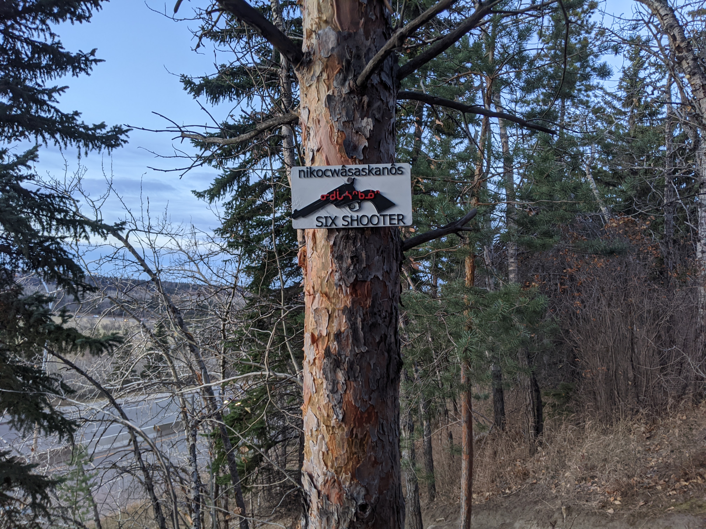

"Six Shooter — the ‘little six-er’, a six-cartridge revolver"

3D printed plaque: black revolver graphic with the syllabics ᓂᑯᒑᐧᓴᐢᑲᓅᐢ in red across the cylinder.
On the wall the nikocwâsaskanôs plaque sits directly under the mistâpiskihkomân (Machete) plaque, sharing the same white-and-black palette: a long single-action revolver in black silhouette with a bone-handle grip, the syllabics ᓂᑯᒑᐧᓴᐢᑲᓅᐢ carved in red across the chamber, and ‘SIX SHOOTER’ in big letters underneath.
The Cree word reads three pieces deep. nikocwâs‑ is the numeral ‘six’ (the standard nikotwâsik, with the local Plains Cree palatalisation tw → cw that you hear across Edmonton). ‑askan‑ is the body-part medial ‘bone, hard projecting thing,’ the same medial in oskan ‘bone’; here it names the cylinder-and-barrel as the gun’s hard six-piece. The diminutive ‑ôs at the end means ‘small, little.’ Read together: ‘the little six-shot.’
The trail of the same name flows along the south side of the river toward Emily Murphy Park in NW Edmonton. Trailforks rates it blue with a 1.1 km roll-and-pump style, named — like its neighbours Rich Kid, Plan B, and Machete — in the cowboy/outlaw register that the local builders favour for this stretch. The land is ᓀᐦᐃᔭᐤ ᐊᐢᑭᕀ Nêhiyaw‑Askiy (Plains Cree territory), and Trailforks itself lists the AKA ᓂᑯᒑᐧᓴᐢᑲᓅᐢ nikocwâsaskanôs for this trail — the same form carved on the plaque.
Explore the trail on Trailforks, with a local preview from the uploaded GPX.
The free-standing word for ‘six’. In Plains Cree the tw cluster is widely realised as cw (palatalised), so nikotwâsik and nikocwâsik are both heard.
Literally ‘the shooting-thing.’ This is the generic word for gun; nikocwâsaskanôs is the specifically-six-shot diminutive for a revolver.
The metaphor is body-part: a revolver is named for its hard, six-chambered bone-like cylinder.
| English | SRO | Syllabics |
|---|---|---|
| Six Shooter — the little six-shot (revolver) | nikocwâsaskanôs | ᓂᑯᒑᐧᓴᐢᑲᓅᐢ |
| Six (count) | nikotwâsik / nikocwâsik | ᓂᑯᑤᓯᐠ |
| Gun, firearm (generic) | pâskisikan | ᐹᐢᑭᓯᑲᐣ |
| Bone, hard projecting thing | oskan | ᐅᐢᑲᐣ |
| S/he shoots | pâskisikêw | ᐹᐢᑭᓯᑫᐤ |
SRO uses ê î ô â. Syllabics match the SRO shown.
Dialectal preferences may affect minor spelling choices; check local norms for signage.
References: itwêwina, Online Cree Dictionary, Plains Cree Dictionary
Each sign is 3D printed in Edmonton. Want one for your own trail, cabin or wall?